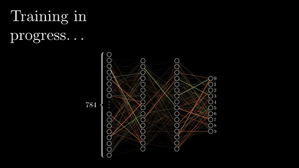

Neural networks are what's hot on the streets right now. They were actually proposed a long time ago but while the literature was getting there, we did not yet have the computational power to fully take advantage of their architecture. Another issue is that the expectation that everyone had for them was far too high. People were really excited about the idea of Artificial General Intelligence; that is, a try A.I. that could function at and beyond human capacity. This has not been seen yet but whether it takes 20, 40, or 100 years we'll get there; that is, if we don't blow ourselves up first.
The gif on right is an outstanding visualization created by Grant Sanderson, the creator of 3Blue1Brown youtube channel that uses programmatically animated visualizations to explain mathematical concepts; mostly in the area of applied mathematics. It depicts how a neural network takes in an input, propagates the data through its neurons, and picks one of the preset outputs that represent a discrete number of possibilities. In this case its taking a 28x28 pixel image of a number, flattening it to 784 values, 28*28=784, and picks the number that its trained to recognize.
A neural network is a mathematical entity that can approximate any function but some functions are easier to approximate then others. There is a relationship between the complexity of the problem and the structure of the parameters of the network. If the function you are modeling is polynomial, you would want as many weights as there are degrees in that polynomial, to capture all of the variance in the data generated by it.
With neural networks, it works in the same way. With extremely complex functions, we need more parameters to represent it.
With a single feed-forward layer, you can model any function, but it can grow exponentially large. By giving the model multiple layers, we force it to learn combinations of different activations to make decisions, and these combinations of activations will generalize better because they haven't memorized the data with an exact sequence of values, but with features that are representations of some pattern in the data.

If you have too many weights, it can use one trajectory of weights for each possible data point it sees, and those weights may not need to be reused to learn other data points, and so it is not learning to abstract its understanding of the data which is a sort of memorization of data.
So when implementing a neural network you have to try to match the complexity of the function with the structure of the network, otherwise you might overfit or underfit and get garbage outputs.
More to come soon!